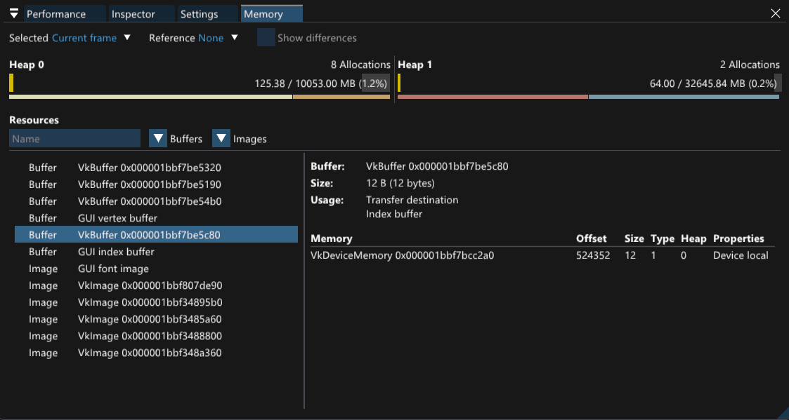
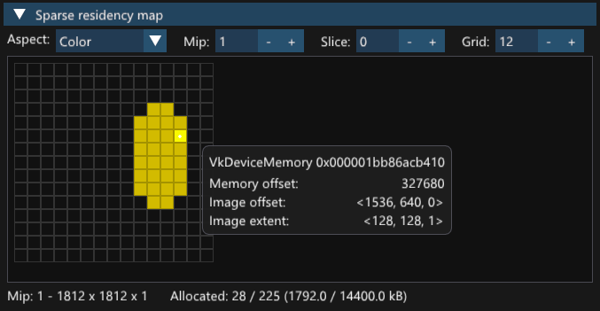
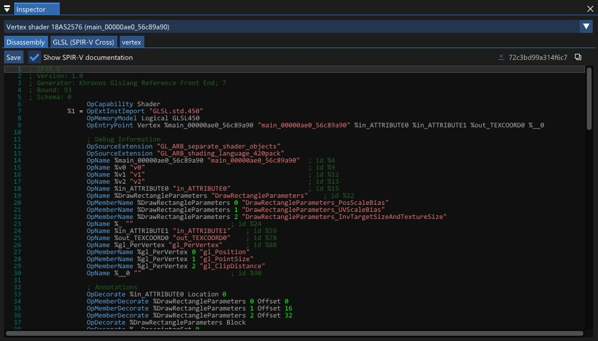

User Interface
Once the layer has successfully attached, and output is set to overlay, an overlay will be displayed on top of the image rendered by the application.
This section describes all features it offers.
Most of the windows and tabs in the overlay can be freely moved and resized to fit the user’s needs.
{kind=link}
Profiling layer’s overlay window displaying rendering performance overview.
Performance graph
The graph presents the data in form of blocks that highlight the highest contributors to the frame’s performance.
The higher the block, the more contribution it has.
This behavior can be disabled by selecting Constant height in Height combo box.
Clicking on a column of the performance graph will jump to and highlight the selected region in the Frame browser for a short time.
By default the graph presents Render passes (e.g., VkRenderPass objects).
The setting can be changed with Histogram Groups combo box.
Performance graph doesn’t include any idling between presented regions. Such idling is presented in Queue utilization graph, but it can be enabled in this graph too by checking Show idle checkbox.
When profiling multiple frames, the graph shows all frames collected by the overlay.
It can become unreadable if the number of frames is high, even when Frames group is selected.
Show active frame checkbox allows to limit the graph to the selected frame only.
Frames list
When multiple frames are collected, this tab allows to quickly jump to a selected frame.
If the layer is configured to delimit the data by command buffer submissions, this window will be titled Submissions, but its functionality will remain the same.
Frame browser
The frame data is displayed in a form of a tree in the following hierarchy:
vkQueueSubmit: The API call that submitted the command buffers in batches of VkSubmitInfos.
VkSubmitInfo: A structure that contains a list of the submitted command buffers.
Command buffers: VkCommandBuffer objects that are recorded lists of commands.
Render passes: VkRenderPass objects, dynamic rendering passes, compute or transfer operations passes.
Pipelines: VkPipeline objects defining state used for the subsequent commands.
Drawcalls: Commands that are executed on the GPU, e.g., vkCmdDraw, vkCmdDispatch.
On the right side of each tree node there is a measured time of the entire node. The node’s background also indicates its contribution to the total frame time.
Command buffers and pipelines also offer a context menu with additional options.
Command buffer context menu
Show performance counters: Shows the counters collected for the command buffer in the Performance counters tab.
Pipeline context menu
Inspect: Selects the pipeline for inspection in Inspector window.
Copy name: Copies the name of the pipeline to the system’s clipboard.
Queue utilization graph
This window shows an overview of queue utilization and synchronization semaphores.
It is useful for profiling applications using multiple queues, where proper synchronization between them is crutial in fully leveraging GPU capabilities.
Semaphores are marked with triangles above the timelines. Selecting a semaphore signal or wait event will also highlight other occurrences of the selected semaphores in the graph, helping in analysis of dependencies between the queues. Clicking again on a selected mark deselects it.
Top pipelines
Top piplines table presents aggregated time spent in each pipeline state.
The table consists of the following columns:
Pipeline: Name of the pipeline, either given by the application via VK_EXT_debug_utils or VK_EXT_debug_report extension, or automatically generated by the layer.
Stages: Shader stages used by the pipeline.
Contrib: Contribution of the aggregated pipeline time to the total frame time.
Total: Aggregated pipeline time.
If a reference pipelines are set, the table also contains the reference time of the pipeline and the delta between the current and reference time.
The currently presented times can be exported to a CSV (Comma-Separated Values) file and loaded later for comparison.
Performance counters
Performance counters are currently supported only on Intel GPUs.
The layer uses VK_INTEL_performance_query extension to collect detailed metrics for each command buffer (the queries are inserted at the beginning and end of the command buffer).
Then, Intel Metrics-Discovery library is used to calculate the metrics from the query results. The API groups metrics into sets, allowing only metrics from a single set to be collected at a time. The set can be changed to any of the available ones listed in the combo box at the top of the window.
Similarly as in Top pipelines view, the reference metrics values can be saved and loaded from a file.
Memory
Memory tab gives an overview of memory allocations made by the profiled application.
{kind=link}
The allocations are grouped into memory heaps that are reported by the driver. Below each heap there is a breakdown of allocations per memory type (memory types specify, for example, memory caching properties or host visibility of the allocations).
The data can be automatically compared between frames or snapshots using the options at the top of the memory tab. When a reference frame is selected, the new and freed resources will be marked with + and - symbols. The differences in heap memory usage will also be marked in the breakdowns.
The memory tab also lists all resources created by the application, which allows to investigate the allocations at a finer granularity. When a resource is selected, Resource Inspector will list its create information, such as size or usage. Below the overview there is a table listing all memory bindings associated with the resource.
Sparse residency map
Partially resident images can also be viewed in a Sparse Residency Map that presents the current residency of the image in 2D grid. The viewed subresource can be selected with the options at the top of the tool. Each binding can be hovered to display more details, such as offset, extent and device memory being bound.
{kind=link}
Inspector
Pipeline inspector allows to check the details of the profiled pipeline state.
It provides contents of all core graphics pipeline create info structures used to create the pipeline, and the shaders used by the pipeline.
Shader inspector
{kind=link}
The shader inspector is part of pipeline inspector tab.
When a shader stage is selected in the combo box at the top of the window, the inspector will display the SPIR-V disassembly of the shader, as well as a high-level representation in GLSL or HLSL language obtained with spirv-cross. If the shader has the actual source code information embedded, it will be displayed instead of spirv-cross disassembly.
SPIR-V disassembly viewer has built-in SPIR-V reference with descriptions of most of opcodes. The documentation is downloaded from https://registry.khronos.org/SPIR-V/specs/unified1/SPIRV.html (link to the document is also present in the GUI below the description of an opcode).
If pipeline executable properties extension is enabled, either by the layer or by the profiled application, the shader inspector will also display the pipeline executable statistics and internal representations associated with the selected shader stage.
All representations of the shader (SPIR-V disassembly, GLSL, HLSL and internal representations) can be saved to a file for further analysis.
At the top right corner of the inspector there is a shader module identifier which can be used to correlate the shader with other tools that also use those identifiers.
Statistics
This window presents an overview of drawcall commands (vkCmdDraw, vkCmdDispatch, etc.) used in the frame.
The table contains average, total, minimum and maximum execution times of each command type.
By default the table is filtered to show only the commands that were used in the frame, but can be expanded to show all supported commands.
Settings
Settings tab allows to configure the overlay’s appearance.
Currently, the following options are available:
Interface scale: Sets the UI scaling factor for high-DPI displays.
Collected frame count: Sets the number of collected and displayed frames.
Time unit: Sets the time unit (milliseconds, microseconds or nanoseconds).
Show debug labels: Shows debug labels inserted by the application in the Frame browser.
Show shader capabilities: Shows shader capabilities in form of badges in the Frame browser and Top pipelines.